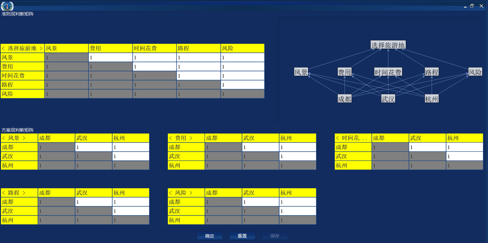
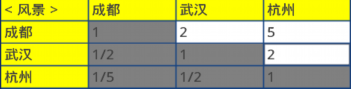
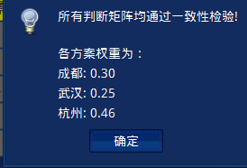
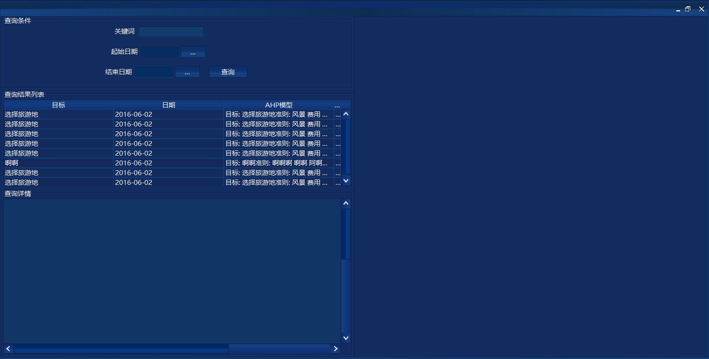
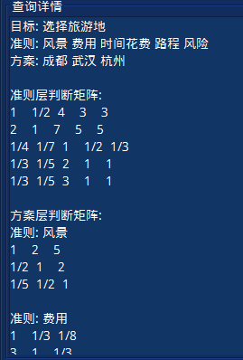
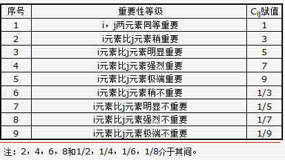

进入战略评价子系统后，选择AHP层次分析子模块，如图1所示单击“AHP层次分析”，弹出AHP层次分析窗口
图1. AHP层次分析子模块进入
一·要素输入
可以看到AHP层次分析模块输入界面如图2所示。战略目标只能有一个，准则和方案不超过10个，中间以空格隔开。当输入完毕，进入下一个页面时，点击“确定”；如果需要重新输入，点击“重置”；点击“示例”按钮，给出“选择旅游地”的层次分析例子。
图2. AHP层次分析输入窗口
下面是用层次分析法选择旅游地的例子
图3. AHP层次分析示例
二·数据输入
单击“确认”进入下一步的数据输入窗口，如图4所示。

图4. 数据输入窗口整体概览
整个数据输入窗口分为三个部分，上面左边是准则层矩阵输入，上面右边是层次结构图，下面是方案层矩阵输入。准则层矩阵只有一个，它表示多个准则针对目标的判断矩阵。而方案层判断矩阵个数与准则个数相同，它表示多个方案对每个准则的判断矩阵。
- 判断矩阵
- 当所有判断矩阵输入完成，点击“确定”。如果某个判断矩阵不满足一致性判定，则会在对应的矩阵上弹出提示窗口，如图4-2
如图4-1所示，该矩阵表示，对于风景而言，成都武汉和杭州两两比较的判断矩阵。该矩阵只有上三角可操作，下三角是上三角对应位置的倒数，对角线为1(当上三角的值选中，下三角会自动确定)。比如，行“成都”和列“杭州”对应的数字为5，表示就风景而言，成都比杭州明显重要。重要性度量表详见图8

图4-1. 判断矩阵示例
图4-2. 判断矩阵不满足一致性判定提示窗口
三·结果显示与保存
- 修正所有不满足一致性判定的矩阵，点击确定后，输出层次分析结果，如图5-1
- 点击保存按钮，保存本次AHP模型。保存成功如图5-2

图5-1 ahp结果显示
图5-2. ahp结果保存成功
四·历史查询
在战略评价子系统下，查询选择框中，单击选择“AHP结果查询”如图6所示，进入AHP历史结果查询窗口，窗口结构如图7所示。

图6. AHP结果查询进入

图7. AHP结果查询窗口概览
查询窗口分为3部分，第1块为查询条件输入，具体如图7-1，在关键词输入框中输入战略目标关键词，支持模糊查询，如查询“选择旅游地”，输入“旅游地”，在起始日期和结束日期中选择日期缩小范围，然后点击查询，可以看到第2块“查询结果列表”中显示查询结果（初始显示所有历史记录列表），如图7-2所示，单击所选记录，则第3块“查询详情”中显示该结果的详细数据，如图7-3所示。
图7-1. 查询条件输入
图7-2. 结果列表显示

图7-3. 结果详情显示
层次分析法(AHP法) 是一种解决多目标的复杂问题的定性与定量相结合的决策分析方法。该方法将定量分析与定性分析结合起来，用决策者的经验判断各衡量目标能否实现的标准之间的相对重要程度，并合理地给出每个决策方案的每个标准的权数，利用权数求出各方案的优劣次序，比较有效地应用于那些难以用定量方法解决的课题。 层次分析法是社会、经济系统决策中的有效工具。其特征是合理地将定性与定量的决策结合起来，按照思维、心理的规律把决策过程层次化、数量化。是系统科学中常用的一种系统分析方法.
其基本原理如下：
根据问题的性质和要达到的总目标，将问题分解为不同的组成因素，并按照因素间的相互关联影响以及隶属关系将因素按不同层次聚集组合，形成一个多层次的分析结构模型，从而最终使问题归结为最低层(供决策的方案、措施等)相对于最高层(总目标)的相对重要权值的确定或相对优劣次序的排定。运用层次分析法构造系统模型时，大体可以分为以下四个步骤：
- 建立层次结构模型
- 构造判断(成对比较)矩阵
- 不把所有因素放在一起比较，而是两两相互比较。
- 对此时采用相对尺度，以尽可能减少性质不同的诸因素相互比较的困难，以提高准确度。 判断矩阵是表示本层所有因素针对上一层某一个因素的相对重要性的比较。判断矩阵的元素aij用Santy的1—9标度方法给出。 心理学家认为成对比较的因素不宜超过9个，即每层不要超过9个因素。
- 层次单排序及其一致性检验
- 层次总排序及其一致性检验
将决策的目标、考虑的因素（决策准则）和决策对象按它们之间的相互关系分为最高层、中间层和最低层，绘出层次结构图。
最高层：决策的目的、要解决的问题。
最低层：决策时的备选方案。
中间层：考虑的因素、决策的准则。
对于相邻的两层，称高层为目标层，低层为因素层。
在确定各层次各因素之间的权重时，如果只是定性的结果，则常常不容易被别人接受，因而Santy等人提出：一致矩阵法，即：
两两比较打分规则如下图8：

图8. 打分规则
对应于判断矩阵最大特征根λmax的特征向量，经归一化(使向量中各元素之和等于1)后记为W。W的元素为同一层次因素对于上一层次因素某因素相对重要性的排序权值，这一过程称为层次单排序。能否确认层次单排序，需要进行一致性检验，所谓一致性检验是检验判断矩阵的两两比较是否一致。
这步计算出各备选方案对于目标的整体权重，并进行整体一致性检验。